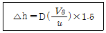
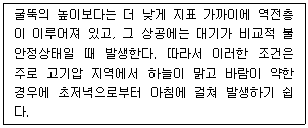
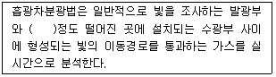
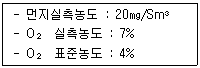
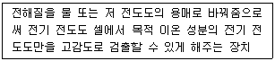
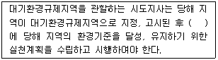
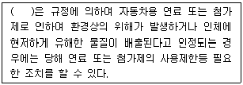

대기환경산업기사 (2005-05-29 기출문제)
1과목: 대기오염개론
1. 표준상태에서 질소산화물(NO2) 350ppm은 몇 ㎎/Nm3 인가?
- 484 ㎎/Nm3
- 513 ㎎/Nm3
- 624 ㎎/Nm3
- 718 ㎎/Nm3
(정답률: 알수없음)

2. 굴뚝의 직경이 3m, 배출속도가 7m/sec, 평균풍속은 3.5m/sec 일 때, 다음식을 이용하여 Δh(유효상승고)를 계산한 값은?

- 12.0m
- 9.0m
- 7.0m
- 6.0m
(정답률: 알수없음)
3. 대기오염물질 중 2차 오염물질로 분류될 수 없는 것은?
- SO2
- SO3
- HCl
- NO2
(정답률: 알수없음)
4. 공기가 3시간 동안 0.6m/s로 필터를 통과한 후의 광투과율은 80%이다. 1000 m당의 Coh는?
- 약 1.50
- 약 2.30
- 약 2.90
- 약 3.80
(정답률: 알수없음)
5. 다음이 설명하는 굴뚝 연기 형태는?

- 환상형
- 지붕형
- 훈증형
- 원추형
(정답률: 알수없음)
6. 대기오염물질 농도를 추정하기 위한 상자모델(Box Model)의 이론을 전개하기 위한 가정과 가장 거리가 먼 것은?
- 확산에 의한 오염물의 주이동방향은 x축이다.
- 오염물의 분해는 일차반응에 의한다.
- 고려되는 공간에서 오염물의 농도는 균일하다.
- 고려되는 공간의 수직단면에 직각방향으로 부는 바람의 속도가 일정하여 환기량이 일정하다.
(정답률: 알수없음)
7. 1984년 인도 중부의 보팔(Bopal)시에서 발생한 대기오염사건의 원인 물질은?
- 황화수소(H2S)
- 황산화물(SOx)
- 메틸이소시아네이트(CH3CNO)
- 머캡탄(CH3SH)
(정답률: 알수없음)
8. 역사적 대기오염사건중 런던형 스모그(Smog)사건의 설명과 가장 거리가 먼 것은?
- 발생기온 : 0∼5℃
- 화학반응 : 산화
- 발생시간 : 아침, 저녁
- 역전종류 : 복사성역전
(정답률: 알수없음)
9. 라디오 존데(radiosonde) 기구는 어디에 사용되는 측정장비인가?
- 고도에서의 주파수를 측정하는 장비
- 고도에서의 입자상 물질을 측정하는 장비
- 고도에서의 가스상물질을 측정하는 장비
- 고도에서의 온도, 기압, 습도를 측정하는 장비
(정답률: 알수없음)
10. 휘발유를 사용하는 차량의 배출오염물중 탄화수소를 가장 많이 발생시키는 경우는?
- 공전(Idling)
- 가속
- 감속
- 정속
(정답률: 알수없음)
11. 대도시의 도로상의 교통밀도가 시간당 10,000대이고, 차량의 평균 속도가 60km/hr이다. 차량 한 대의 탄화수소의 배출량이 3.2g/hr·대 일 때, 이 도로상에서 방출되는 탄화수소의 총량은 g/hr·m인가?
- 0.15g/hr·m
- 0.33g/hr·m
- 0.53g/hr·m
- 0.83g/hr·m
(정답률: 알수없음)
12. 가스성분을 분석한 결과 CO2가 30%이고 나머지가 N2로 구성되어 있다면 이 혼합가스의 밀도는 얼마인가?
- 약 1.1 kg/Sm3
- 약 1.5 kg/Sm3
- 약 2.0 kg/Sm3
- 약 2.5 kg/Sm3
(정답률: 알수없음)
13. 지상 10m에서의 풍속이 10m/s이라면 지상 40m에서의 풍속은 얼마(m/s)인가? (단, P=1/9이고 Deacon식을 이용)
- 약 10.8 m/s
- 약 11.7 m/s
- 약 12.2 m/s
- 약 13.4 m/s
(정답률: 알수없음)
14. 비행기가 초음속으로 고공비행을 할 때 대기에 어떤 영향을 주는가?
- Ozone층의 파괴와 CO2의 증가
- Mesosphere의 파괴와 NO2의 증가
- 대류권의 파괴와 CO2의 증가
- 지표대기층의 파괴와 NO2의 증가
(정답률: 알수없음)
15. 체적이 100m3인 지하 복사실의 공간에서 오존의 배출량이 0.2mg/min인 복사기를 연속으로 작동하고 있다. 복사기를 사용하기 전의 실내 오존의 농도가 0.⑤ppm이라고 할 때 6시간 사용 후 오존농도는 몇 ppb인가? (단, 표준상태 기준)
- 283
- 386
- 430
- 520
(정답률: 알수없음)
16. 휘발유 자동차의 배출가스를 저감하기 위한 삼원촉매장치에서 환원촉매로 사용하는 것은?
- 백금
- 로듐
- 파라듐
- 바나듐
(정답률: 알수없음)
17. 분진농도가 150㎍/m3이고, 상대습도가 70%인 상태의 대도시에서 가시거리는 몇 km인가? (단, A=1.2)
- 8
- 12
- 16
- 20
(정답률: 알수없음)
18. 대기구조를 균질층과 이질층으로 구분할 때 균일층의 최대범위로 가장 알맞는 것은?
- 지상 0 ∼ 30 km
- 지상 0 ∼ 88 km
- 지상 0 ∼ 150 km
- 지상 0 ∼ 200 km
(정답률: 알수없음)
19. 어떤 공장의 현재 유효연돌고가 50m이다. 이 때의 농도에 비해 유효연돌고를 높여 최대지표농도를 1/2 로 감소시키고자 한다. 다른 조건이 모두 같다고 가정할 때 유효연돌고를 얼마로 높이면 되는가?
- 약 62 m
- 약 66 m
- 약 71 m
- 약 75 m
(정답률: 알수없음)
20. 대기오염물질인 암모니아의 지표식물과 가장 거리가 먼것은?
- 토마토
- 알팔파
- 해바라기
- 메밀
(정답률: 알수없음)
2과목: 대기오염 공정시험 기준(방법)
21. 피토관과 마노미터로 굴뚝 배출가스의 평균동압을 측정한 결과 15mmH2O 였다. 유속은 얼마인가? (단, 피토우관 계수는 0.7, 굴뚝내 배출가스 밀도(γ)는 0.8kg/Sm3 로 한다.)
- 18.6 m/sec
- 16.1 m/sec
- 15.1 m/sec
- 13.4 m/sec
(정답률: 알수없음)
22. 굴뚝단면이 원형일 경우, 굴뚝반경(R)이 0.6m일 때 먼지를 측정하기 위한 측정점수로 적절한 것은?
- 4
- 8
- 12
- 16
(정답률: 알수없음)
23. 환경대기중에 있는 아황산가스 농도를 자동연속 측정시 주시험방법은?
- 용액전도율법
- 불꽃광도법
- 자외선형광법
- 화학발광법
(정답률: 알수없음)
24. 굴뚝 배출가스 중 총탄화수소에 사용되는 용어에 관한 설명으로 적절한 것은?
- 교정가스: 미지농도를 희석가스로 사용한다.
- 영점편차: 영점가스 주입전에 측정기가 반응하는 정도의 차이로 운전기간 동안 지속적으로 교정하여야 한다.
- 스팬값: 측정기의 측정범위는 배출허용기준 이상으로 하며 보통 기준의 1.2 - 3배를 적용한다.
- 반응시간: 오염물질농도의 단계변화에 따라 최종값에 도달하는 시간을 말한다.
(정답률: 알수없음)
25. 분석대상가스가 벤젠인 경우, 채취관, 도관의 재질로 적절치 못한 것은?
- 경질유리
- 불소수지
- 보통강철
- 석영
(정답률: 알수없음)
26. 분석대상가스가 질소산화물인 경우 흡수액으로 적절한 것은? (단, 아연환원 나프틸에틸렌디아민법 기준)
- 증류수
- 수산화나트륨용액
- 아연아민착염용액
- 아세틸아세톤함유흡수액
(정답률: 알수없음)
27. 배출가스중 카드뮴 분석법에서 분석용 시료용액 조제시 전처리법이 잘못된 것은?
- 타르, 기타 소량의 유기물 함유한것: 질산 - 염산법
- 유기물을 함유하지 않은것: 질산법
- 다량의 유기물, 유리탄소를 함유하는것: 고온회화법
- 타르, 기타 소량의 유기물 함유한것: 질산 - 과산화수소수법
(정답률: 알수없음)
28. ( )안에 알맞는 범위는?

- 0.⑤ ~ 0.5m
- 0.5 ~ 5m
- 5 ~ 50m
- 50 ~ 1000m
(정답률: 알수없음)
29. 사각형 굴뚝단면적이 36m2 라면 가장 알맞은 먼지 측정 점수는?
- 16
- 20
- 24
- 36
(정답률: 알수없음)
30. 시험의 기재 및 용어에 대한 정의로 알맞지 않는 것은?
- 용액의 액성표시는 따로 규정이 없는 한 유리전극법에 의한 pH미터로 측정한 것을 뜻한다.
- 액체성분의 양을 '정확히 취한다'함은 홀피펫, 메스 플라스크 또는 이와 동등이상의 정도를 갖는 용량계를 사용하여 조작하는 것을 뜻한다.
- '항량이 될 때까지 건조한다'함은 따로 규정이 없는 한 보통의 건조방법으로 1시간 더 건조할 때 전후무게의 차가 0.3mg이하일 때를 뜻한다.
- '바탕시험을 하여 보정한다'함은 시료에 대한 처리 및 측정을 할 때 시료를 사용하지 않고 같은 방법으로 조작한 측정치를 빼는 것을 뜻한다.
(정답률: 알수없음)
31. 환경대기중의 탄화수소 농도를 자동연속(수소염이온화검출기법)으로 측정하는 방법과 가장 거리가 먼 것은?
- 총탄화수소 측정법
- 비메탄 탄화수소 측정법
- 광산란 탄화수소 측정법
- 활성 탄화수소 측정법
(정답률: 알수없음)
32. 흡광광도계에서 읽은 빛의 흡수율이 90%일때 흡광도는?
- 0.2
- 0.5
- 1.0
- 1.5
(정답률: 알수없음)
33. 굴뚝에서 배출되는 가스중의 일산화탄소(CO) 분석방법과 가장 거리가 먼 것은?
- 비분산 적외선 분석법
- 이온전극법
- 정전위 전해법
- 가스 크로마토 그래프법
(정답률: 알수없음)
34. 일반적으로 공정시험법에서 "약"이란 그 무게 또는 부피에 대하여 다음중 어느 것을 말하는가?
- ±2%이내의 차
- ±5%이내의 차
- ±7%이내의 차
- ±10%이내의 차
(정답률: 알수없음)
35. 굴뚝에서 배출되는 가스중 염화수소농도를 분석하는 방법과 가장 거리가 먼 것은?
- 이온 크로마토 그래프법
- 이온 전극법
- 질산은 적정법
- 가스 크로마토 그래피법
(정답률: 알수없음)
36. 어느 굴뚝에서 배출되는 가스중의 수분을 측정한 결과 건조가스 1Nm3당 80g 이었다면 건조 배출가스에 대한 수분의 용량비는?
- 약 3.5%
- 약 9.9%
- 약 12.4%
- 약 18.6%
(정답률: 알수없음)
37. 원자흡광광도법 적용시 사용되는 용어와 그에 따른 정의가 잘못된 것은?
- 슬롯버너: 가스의 분출구가 세극상으로된 버너
- 선프로파일: 스펙트럼선의 파장의 크기를 나타내는 곡선
- 다연료불꽃: 가연성가스/조연성가스의 값을 크게한 불꽃
- 충전가스: 중공음극램프에 채우는 가스
(정답률: 알수없음)
38. B-C유를 사용하는 보일러의 먼지 배출허용기준이 30㎎/Sm3인 배출시설에서의 측정결과가 다음과 같았다. 표준산소농도로 보정한 먼지의 농도는?

- 24.3㎎/Sm3
- 26.8㎎/Sm3
- 28.5㎎/Sm3
- 29.5㎎/Sm3
(정답률: 알수없음)
39. 환경오염 공정시험방법에서 연료용 유류중의 유황 함유량 분석방법으로 알맞는 것은?
- 방사선식 공기법
- 광산란법
- 연소관식 공기법
- 광투과율법
(정답률: 알수없음)
40. 다음은 무엇에 관한 설명인가? (단, 이온크로마토그래프법 기준 )

- 용리액조
- 써프렛서
- 전기 화학적 검출기
- 전도도 분리관
(정답률: 알수없음)
3과목: 대기오염방지기술
41. 프로판가스 1Sm3을 과잉공기를 1.1로 연소하면 생성되는 건조연소가스량은?
- 26.80Sm3
- 24.18Sm3
- 22.31Sm3
- 21.80Sm3
(정답률: 알수없음)
42. 탄소 50 kg과 수소 50 kg을 완전 연소시키는데 필요한 이론적인 산소의 양은?
- 533 kg
- 432 kg
- 386 kg
- 321 kg
(정답률: 알수없음)
43. 연료 중 황(S)성분의 함량이 적은 순서대로 맞게 나열한 것은? (단, 적음→많음)
- 휘발유-경유-등유-석탄-중유
- LPG-휘발유-경유-등유-중유
- LPG-휘발유-등유-경유-중유
- 휘발유-경유-등유-중유-석탄
(정답률: 알수없음)
44. 프로판 550kg을 기화시킨다면 표준상태에서 기체의 용적은?
- 560 Sm3
- 540 Sm3
- 280 Sm3
- 220 Sm3
(정답률: 알수없음)
45. 유량 10,000 m3/hr의 공기를 원형 흡습탑을 거쳐 정화하려고 한다. 흡습탑의 접근유속을 2.5m/sec로 유지하려면 소요되는 흡습탑의 지름(m)은?
- 약 2.8
- 약 2.4
- 약 1.7
- 약 1.2
(정답률: 알수없음)
46. 0.8mm의 액적(구)이 1.5×10-2m/s로 자유침강한다면 레이놀드수(Re)는? (단, 공기밀도는 1.2kg/m3, 점도는 1.8×10-5 kg/mㆍs이다.)
- 0.4
- 0.8
- 1.2
- 1.9
(정답률: 알수없음)
47. 통풍방식중 압입통풍에 관한 설명으로 틀린 것은?
- 역화의 위험성이 없다.
- 연소용 공기를 예열할 수 있다.
- 송풍기의 고장이 적고 점검 및 보수가 용이하다.
- 내압이 정압(+)으로 연소효율이 좋다.
(정답률: 알수없음)
48. 전기집진장치에서 2차 전류가 많이 흐르는 장해현상이 발생되었다. 그 원인과 가장 거리가 먼 것은?
- 분진의 농도가 너무 낮을 때
- 이온이동도가 작은 가스를 처리할 때
- 방전극이 너무 가늘 때
- 공기 부하시험을 행할 때
(정답률: 알수없음)
49. 황함유량이 1.6%(W/W%)인 저유황 중유를 10Kℓ/시간으로 연소시킬 때 생성되는 SO2의 량은? (단, 중유비중 0.95, S는 전부 SO2로 산화된다.)
- 603 kg/hr
- 521 kg/hr
- 432 kg/hr
- 304 kg/hr
(정답률: 알수없음)
50. 유류버너의 종류중 비교적 좁은 각도의 짧은 화염이 발생하고 소형가열로용(용량 2-300L/h)으로 사용되는 것은?
- 고압유압식
- 저압유압식
- 저압공기식
- 고압공기식
(정답률: 알수없음)
51. 전기집진장치에서 재비산방지를 위해서 주로 사용되는 물질은?
- SO3
- 암모니아
- 트리메칠아민
- 염화나트륨
(정답률: 알수없음)
52. 중유를 탈황하는 방법중 내독성 촉매를 첨가하여 고온과 고압수소의 존재하에 반응시켜 황과 황화수소를 제거하는 방법은?
- 활성화탈황법
- 산화탈황법
- 직접탈황법
- 증류탈황법
(정답률: 알수없음)
53. 불화수소를 함유하는 배기가스를 충전 흡수탑을 이용하여 처리하고자 하는데 흡수율 90%를 기대하고, 기상 총괄이동 단위높이(HOG)가 0.5m 일 때 충전 높이는?
- 1.02m
- 1.15m
- 1.50m
- 1.84m
(정답률: 알수없음)
54. 어떤 원형 송풍관(duct)내에 유체가 난류로 흐르고 있다. 이 송풍관의 직경을 1/2로 하면 직관 부분의 압력손실은 몇 배가 되는가? (단, 유량과 마찰계수는 일정한 것으로 본다.)
- 4배
- 8배
- 16배
- 32배
(정답률: 알수없음)
55. 연료의 착화온도에 관한 설명으로 틀린 것은?
- 가연물의 증발량이 많을수록 낮아진다.
- 화합결합의 활성도가 클수록 낮아진다.
- 산소와의 친화성이 클수록 낮아진다.
- 활성화에너지가 클수록 낮아진다.
(정답률: 알수없음)
56. 가로, 세로, 높이가 각 0.5m, 1.0m, 0.8m인 연소실에서 저발열량이 8000kcal/kg인 중유를 1시간에 10kg 연소시키고 있다면 연소열 발생율은?
- 2.0×105 kcal/h·m3
- 4.0×105 kcal/h·m3
- 5.0×105 kcal/h·m3
- 6.0×105 kcal/h·m3
(정답률: 알수없음)
57. 전기집진장치에서 분당 240m3 처리가스량을 이동속도 6cm/sec로 처리하고 있다. 집진판의 단면적이 250m2이고 유입농도가 5g/m3이라면 이 집진장치에서 배출되는 유출농도(g/m3)는? (단, 집진율은 Deutsch-Anderson식 적용)
- 0.118
- 0.131
- 0.152
- 0.188
(정답률: 알수없음)
58. 여과집진장치의 간헐식 탈진방식에 관한 설명으로 틀린것은?
- 고농도, 대용량의 처리가 용이하다.
- 분진의 재비산이 적다.
- 높은 집진율을 얻을 수 있다.
- 진동형과 역기류형, 역기류 진동형이 있다.
(정답률: 알수없음)
59. 표준상태에서 공기의 점성계수(μ)는 1.64×10-5kg/m·sec이다. 동점성계수(υ)는 몆 m2/sec인가?
- 1.27 × 10-5
- 1.31 × 10-5
- 1.34 × 10-5
- 1.41 × 10-5
(정답률: 알수없음)
60. 어느 집진장치에서 처리가스량이 12,000 Sm3/hr, 압력손실이 200㎜H2O일 때 효율이 75%인 송풍기를 사용하고자 한다. 이 송풍기의 축동력은?
- 5.2 Kw
- 8.7 Kw
- 10.8 Kw
- 18.3 Kw
(정답률: 알수없음)
4과목: 대기환경 관계 법규
61. ( )안에 알맞는 내용은?

- 5년 이내
- 3년 이내
- 2년 이내
- 1년 이내
(정답률: 알수없음)
62. 기본부과금의 징수유예기간과 그 기간중 분할납부 회수로 알맞는 것은?
- 유예한 날의 다음날부터 다음 부과기간의 개시일전일까지 - 4회이내
- 유예한 날의 다음날부터 다음 부과기간의 개시일전일까지 - 6회이내
- 유예한 날의 다음날부터 1년이내 - 4회이내
- 유예한 날의 다음날부터 1년이내 - 6회이내
(정답률: 알수없음)
63. 환경부장관이 설치하는 대기오염 측정망의 종류가 아닌것은?
- 지역배경농도 측정망
- 유해대기물질측정망
- 산성강화물질 측정망
- 시정거리 측정망
(정답률: 알수없음)
64. 비산먼지 발생억제시설설치 명령을 위반한 자에 대한 벌칙기준은?
- 100만원이하의 벌금
- 100만원이하의 과태료
- 200만원이하의 벌금
- 200만원이하의 과태료
(정답률: 알수없음)
65. 과징금은 조업정지일수에 1일당 부과금액과 사업장 규모별 부과계수를 곱하여 산정한다. 4종 사업장의 부과계수로 적절한 것은?
- 0.7
- 0.5
- 0.3
- 0.1
(정답률: 알수없음)
66. 다음 중 용어의 정의가 잘못된 것은?
- '매연'이라 함은 연소시에 발생하는 유리탄소를 주로 하는 미세한 입자상 물질을 말한다.
- '검댕'이라 함은 연소시에 발생하는 유리탄소가 응결하여 입자의 지름이 1미크론 이상의 입자상물질이다.
- '가스'라 함은 물질의 연소,합성,분해시에 발생하거나 물리적 성질에 의하여 발생하는 기체상물질이다.
- '첨가제'라 함은 탄소와 수소로 구성된 것으로 자동차의 연료에 소량을 첨가함으로서 자동차의 성능을 향상시키거나 자동차 배출물질을 저감시키는 화학물질이다.
(정답률: 알수없음)
67. 대기오염 경보의 대상지역은 누가 필요하다고 인정하여 지정 하는가?
- 대통령
- 환경부장관
- 특별시장, 광역시장, 도지사
- 군수, 구청장
(정답률: 알수없음)
68. 초과부과금 산정시 오염물질 1킬로그램당 부과금액이 가장 큰 오염물질은?
- 불소화합물
- 황화수소
- 이황화탄소
- 암모니아
(정답률: 알수없음)
69. 다음 중 대기환경규제지역의 지정대상이 되는 기준이 되는 대기오염도는?
- 상시측정결과 대기오염도가 환경기준을 초과하는 지역
- 상시측정결과 대기오염도가 환경기준의 90%이상인 지역
- 상시측정결과 대기오염도가 환경기준의 80%이상인 지역
- 상시측정결과 대기오염도가 환경기준의 70%이상인 지역
(정답률: 알수없음)
70. '초과부과금' 부과대상 오염물질이 아닌 것은?
- 사염화탄소
- 이황화탄소
- 먼지
- 불소화합물
(정답률: 알수없음)
71. 이산화질소의 대기환경기준으로 맞는 것은? (단, 연간 평균치 기준)
- 0.⑤ppm 이하
- 0.1ppm 이하
- 0.5ppm 이하
- 1.0ppm 이하
(정답률: 알수없음)
72. 대기환경보전법의 규정에 의한 '대기오염물질 발생량'의 설명으로 맞는 것은?
- 대기오염물질발생량이라 함은 방지시설을 통과한 후 먼지, 황산화물 및 질소산화물의 발생량을 환경부령이 정하는 방법에 따라 산정한 양을 말한다.
- 대기오염물질발생량이라 함은 방지시설을 통과하기 전 먼지, 황산화물 및 질소산화물의 발생량을 환경부령이 정하는 방법에 따라 산정한 양을 말한다.
- 대기오염물질발생량이라 함은 방지시설을 통과한 후 먼지, 황산화물 및 질소산화물의 발생량을 대통령령이 정하는 방법에 따라 산정한 양을 말한다.
- 대기오염물질발생량이라 함은 방지시설을 통과하기 전 먼지, 황산화물 및 질소산화물의 발생량을 대통령령이 정하는 방법에 따라 산정한 양을 말한다.
(정답률: 알수없음)
73. 자동차연료용첨가제의 종류와 가장 거리가 먼 것은?
- 유동성 향상제
- 다목적 첨가제
- 청정 첨가제
- 매연 억제제
(정답률: 알수없음)
74. 조업정지가 주민의 생활, 기타 공익에 현저한 지장을 초래할 우려가 있다고 인정되는 경우 조업정지 처분에 갈음하여 최대 얼마 이하 과징금을 부과할 수 있는가?
- 1억원
- 2억원
- 3억원
- 5억원
(정답률: 알수없음)
75. 대기환경보전법의 규정에 의하여 환경기술인이 환경보전협회 또는 환경부장관이 교육을 실시할 능력이 있다고 인정하여 지정ㆍ고시하는 기관에서 실시하는 신규교육을 받아야 하는 시기와 횟수는?
- 환경기술인으로 임명된 날부터 1년이내에 1회
- 환경기술인으로 임명된 날부터 3년이내에 1회
- 환경기술인으로 임명된 날부터 5년이내에 2회
- 환경기술인으로 임명된 날부터 6년이내에 2회
(정답률: 알수없음)
76. 다음 중 제작차 배출가스 인증을 면제할 수 있는 자동차와 가장 거리가 먼 것은?
- 군용 및 경호업무용등 국가의 특수한 공용의 목적으로 사용하기 위한 자동차와 소방용 자동차
- 주한 외국군대의 구성원이 공용의 목적으로 사용하기 위한 자동차
- 외국에서 국내의 공공기관 또는 비영리단체에 무상으로 기증한 자동차
- 외국에서 1년이상 거주한 자가 주거를 이전하기 위하여 이주물품으로 반입하는 1대의 자동차
(정답률: 알수없음)
77. 대기환경보전법의 규정에 의한 특정대기유해물질이 아닌것은?
- 프로필렌 옥사이드
- 염화비닐
- 석면
- 스틸렌
(정답률: 알수없음)
78. ( )안에 알맞는 것은?

- 대통령
- 환경장장관
- 산업자원부장관
- 국립환경연구원장
(정답률: 알수없음)
79. 대기환경보전법의 규정에 의한 '고체입자상물질'의 크기 기준으로 적절한 것은?
- 지름이 1㎛이하
- 지름이 1㎛이상
- 지름이 1㎜이하
- 지름이 1㎜이상
(정답률: 알수없음)
80. 대기환경보전법의 규정에 의한 3종 배출시설설치 사업장에 해당되는 것은? (단, 1개 사업장의 대기오염물질 발생량임)
- 대기오염물질 발생량의 합계가 15톤/년 일 때
- 대기오염물질 발생량의 합계가 25톤/년 일 때
- 대기오염물질 발생량의 합계가 70톤/년 일 때
- 대기오염물질 발생량의 합계가 200톤/년 일 때
(정답률: 알수없음)
NO2의 분자량은 46 g/mol이다. 따라서, 1 mol의 NO2는 46 g의 질량을 가지게 된다. 350 ppm는 1 백만 분의 350, 즉 0.035%를 의미한다. 따라서, 1 L의 공기 중에는 0.035%의 부분이 NO2이다.
1 L의 공기는 1/22.4 mol의 기체를 포함하므로, 1 L의 공기 중에는 0.035% × 1/22.4 mol의 NO2가 존재하게 된다. 이를 계산하면 약 1.718 × 10-4 mol/L이 된다.
따라서, 1 L의 공기 중에는 약 1.718 × 10-4 mol의 NO2가 존재하며, 이는 1 L의 부피에 대해 1.718 × 10-4 × 46 g의 질량을 가지게 된다. 이를 mg로 환산하면 약 7.918 mg/L이 된다.
하지만, 이는 온도 0℃, 기압 1 atm에서의 값이므로, 이를 표준상태로 변환해주어야 한다. 이를 위해서는 PV = nRT 식을 이용하면 된다. 이 식에서 P는 기압, V는 부피, n은 몰수, R은 기체상수, T는 절대온도를 나타낸다.
표준상태에서의 기체상수 R은 0.0821 L atm/mol K이다. 따라서, 1 L의 공기가 표준상태에서 차지하는 부피는 22.4 L이 된다. 또한, 온도 0℃는 273 K이므로, 이를 이용하여 PV = nRT 식을 풀면, n = PV/RT = 1 atm × 1 L / (0.0821 L atm/mol K × 273 K) = 0.0409 mol이 된다.
따라서, 1 L의 공기 중에는 0.0409 mol의 기체가 존재하게 된다. 이 중에서 NO2의 몰수는 1.718 × 10-4 mol이므로, NO2의 몰농도는 1.718 × 10-4 mol/L이 된다.
NO2의 분자량은 46 g/mol이므로, 1 L의 공기 중에는 1.718 × 10-4 × 46 g의 질량을 가지게 된다. 이를 mg로 환산하면 약 7.918 × 10-3 mg/L이 된다.
따라서, 표준상태에서 NO2의 농도는 약 7.918 mg/Nm3이 된다. 이 값은 보기 중에서 "718 ㎎/Nm3"과 가장 가깝다.